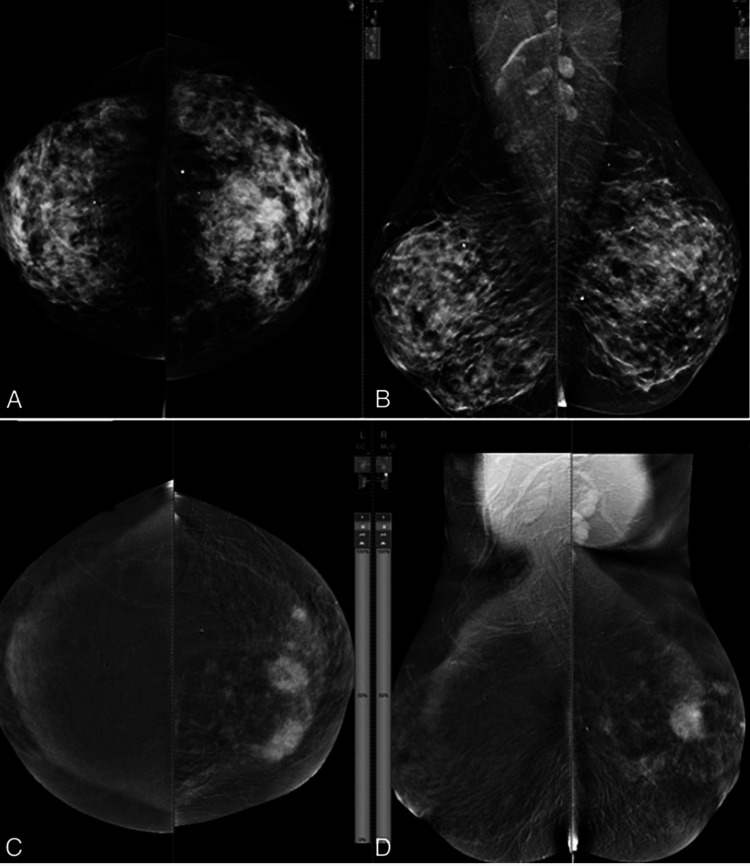
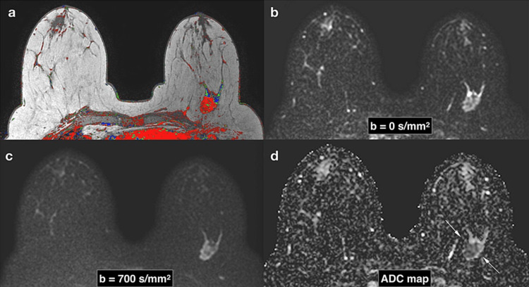

Mohammad Imran
Hossain
Marie Skłodowska-Curie Actions (MSCA) Doctoral Fellow · Karolinska Institutet
Former Erasmus Mundus Scholar
Connecting medical imaging, artificial intelligence, and cancer research.
I am a doctoral researcher in the Department of Medical Epidemiology and Biostatistics at Karolinska Institutet , within the HER-CARE MSCA Doctoral Network, specializing in artificial intelligence and medical imaging for cancer research. My work integrates computational methods with imaging and biological data to advance risk assessment and precision medicine. My doctoral research focuses on developing and validating mammography-based AI models for short-term breast cancer risk prediction and evaluating the predictive value of a negative breast MRI. The aim is to inform evidence-based, personalized screening strategies that distinguish women who may benefit from supplemental imaging from those for whom longer screening intervals may be appropriate. More broadly, I am excited by research that brings together medical imaging, biological data, and trustworthy AI to better understand cancer and support personalized care.
Research interests
- Medical AI
- Breast cancer screening
- Computational pathology
- Trustworthy AI
- Multimodal learning
How much reassurance does a negative scan provide?
A scan captures one moment; follow-up reveals what happens next. A negative result is reassuring, but it does not mean that every woman has the same future risk. Linking imaging information with subsequent cancer outcomes allows us to study how that risk changes over time. The research also examines how closely predicted risks match observed outcomes and whether models perform consistently across different populations. The figures below connect these questions with the workflow used to investigate them.
Three complementary questions
STUDY 01 / After a negative mammogram
Who remains at higher short-term risk?
Identify women who may benefit from supplemental imaging.
STUDY 02 / For women at lower predicted risk
Can screening intervals be extended appropriately?
Evaluate risk over five years and the potential for less frequent screening.
STUDY 03 / After a negative breast MRI
How does subsequent cancer risk evolve?
Assess whether MRI findings can help personalize future follow-up.
Match additional imaging and follow-up intervals to individual risk.


Age · BMI · family history · breast density · lifestyle / hormonal factors · polygenic risk, where available
Deep learning + multimodal risk modelling
Image-derived features + clinical covariates → time-to-event models
Estimate 1–5-year cancer risk
Linked cancer outcomes · discrimination & calibration · subtype and population analyses
LET’S CONNECT
Good research starts with a conversation.
Open to exchanging ideas and exploring collaborations in medical AI and cancer research.